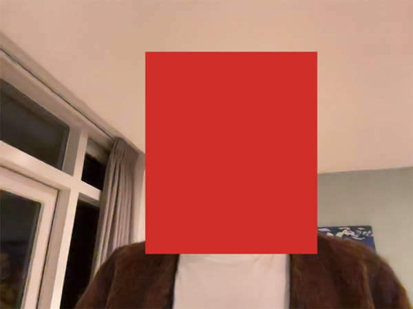

Information
AI Photobooth is like a digital mirror, reflecting how Artifical Intelligence models “see” us.
How it works
A face is detected by an AI! You can click the button to capture your likeness
The face is isolated.
This image is sent to an LLM for a caption.
A caption is returned...
"The photo shows a person with medium-length, light brown hair. They are wearing a brown sweater over a white shirt. The background includes a window with a partially visible white frame and a light-colored wall. The lighting in the room appears soft and indoor, and there is a poster or piece of art visible on the wall behind them."
The caption is sent as a request to an image generator.
An image is returned!